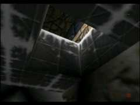
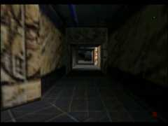
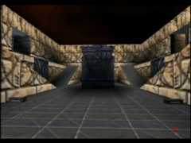
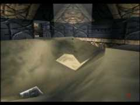
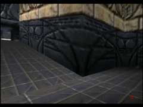
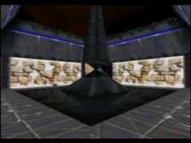
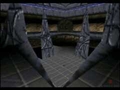
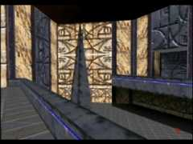

|
| Perfect
Dark : Skedar |
| C'est
un peu le Nouveau Temple de Perfect Dark.
Trois grands espaces reliés par des Couloirs assez sombres. La
Grande Salle avec les 4 piliers (et l'Arme au milieu) est bien Sympa,
puisque tout le monde se jette sur l'Arme, qui est - en général -
la Meilleure du niveau. Les 2 Grandes Salles remplies de neige sont
assez vicieuses pour viser, du fait des pentes... |
 |
 |
 |
| La
Salle avec les 2 Balcons est un Modèle de fourberie (qui me rappelle
le Complexe), surtout avec des Grenades ou des Roquettes. Le long
Souterrain qui court sous le Niveau est bien pensé, contrastant avec
les grands espaces juste au dessus, permettant de se cacher un moment
de l'Action. On se repère bien, du fait des la diversité des Zones
(grandes, petites, couloirs) et des Eléments du Décor (Obélisques,
Neige, Obscurité, Balcons) . |
 |
 |
 |
| Un
très bon Niveau en somme, qui convient à tous les scénarios, aux Snipers
comme aux Bouchers. Le Niveau Standard, placé comme il se doit, en
première position dans le choix des Arènes.
|
 |
 |
 |
| Dans
les Niveaux à grands espaces, les Perfect ou les Dark Sims ne ratent presque
pas leur cible, puisqu'ils visent en permanence votre position sur le
Radar. Attention donc à ne pas trop traîner dans la Grande Salle
aux 4 Piliers, le nez en l'air, sous peine de Balles dans le Dos. |
 |
 |
 |
| Toutes
les Armes conviennent. Le Niveau est assez grand pour le Farsight, assez
aéré pour les Roquettes ou Grenades, contient de bons endroits d'où
l'on peut Sniper en Mode " Pan t'es Mort !". Les
Armes Automatiques de Grande Tuerie (AR34, K7, Cyclone…) sont à la Fête,
avec de longs couloirs pour vider son Chargeur en toute quiétude. Au
Niveau du Laptop, les Salles sont assez grandes pour y installer une Sentinelle
dans un coin (ou tout simplement au milieu !)… |
 |
 |
 |
| Le
campeur aime bien un des 2 recoins situés de part et d'autre de la Salle
avec le Grand Obélisque. Il y a un petit recoin d'ou l'on peut voir venir
l'ennemi d'assez loin (mais attention a l'escalier sur la gauche !)
et un autre ou l'on peut se cacher derrière le petit Obélisque. La
Grande Salle enneigée avec un Trou à sens unique où l'on atterrit
dans le souterrain est pas mal aussi, puisque toute personne entrant sera
vue de loin. Le Campeur claustrophile aura eu la bonne idée de parsemer
l'encablure de l'entrée de la Salle avec des Mines, ou un Laptop, Dragon…
|